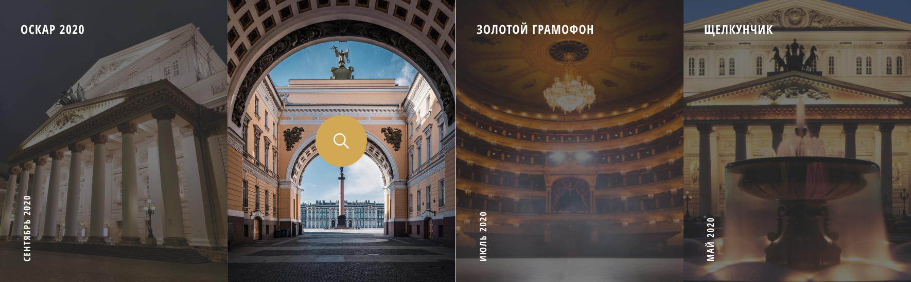

Большой театр
Большо́й теа́тр — петербургский театр, существовавший в 1784—1886 годах,
с 1886 года — Петербургская консерватория. Первое постоянное
в Санкт-Петербурге, крупнейшее в России и одно из крупнейших театральных
зданий в Европе XVIII.

Большой театр
Большо́й теа́тр — петербургский театр, существовавший в 1784—1886 годах,
с 1886 года — Петербургская консерватория. Первое постоянное
в Санкт-Петербурге, крупнейшее в России и одно из крупнейших театральных
зданий в Европе XVIII.
Контакная Информация


O Театре
Самый лучший театр СПБ
Как свидетельствуют архивные документы, первое каменное
здание Большого театра начали возводить в 1775 году по
проекту Антонио Ринальди. В дальнейшем, после того как
Ринальди упал с лесов и не мог лично наблюдать за ходом
работ,
Екатерина II поручила немецкому театральному
декоратору и архитектору Людвигу Филиппу Тишбейну создать
новый проект театра, который и был воплощён архитекторами
Ф. В. фон Бауром и М. А. Деденёвым. Открытие его состоялось
в
1783 году, хотя, основываясь на других свидетельствах, годом
открытия можно считать 1784 год.
немного о цифрах

1600 посадочный мест

350 лет истории

Наши Постановки

партнеры театра
стать меценатом
(с) Все права защищены. Большой театр. 2020
Разработано d-e-n.ru